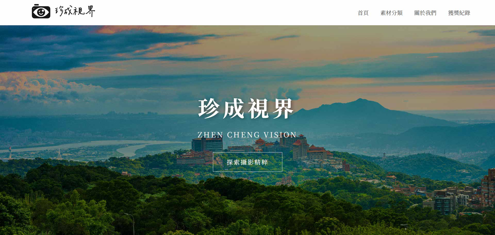

Web Dev
PORTFOLIO / 2026


|
 珍成視界專為獲獎攝影師打造的數位藝廊。採用 PHP 與 MySQL 實作動態後台管理系統，讓使用者能輕鬆上傳並管理高品質影像。設計重點在於沉浸式視覺與資料庫存取效能的完美平衡。 |
PORTFOLIO / 2026
|
 珍成視界專為獲獎攝影師打造的數位藝廊。採用 PHP 與 MySQL 實作動態後台管理系統，讓使用者能輕鬆上傳並管理高品質影像。設計重點在於沉浸式視覺與資料庫存取效能的完美平衡。 |